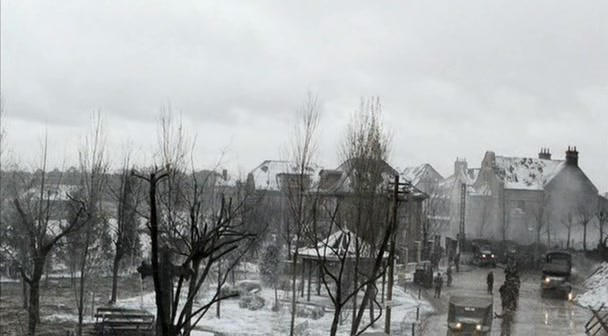
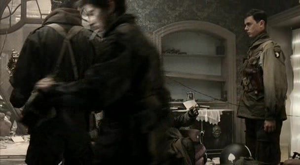
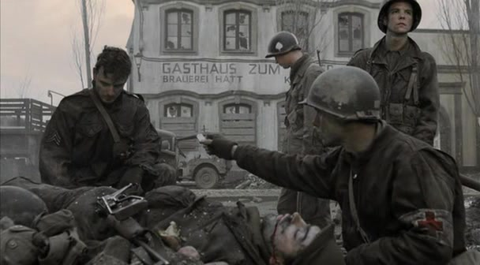
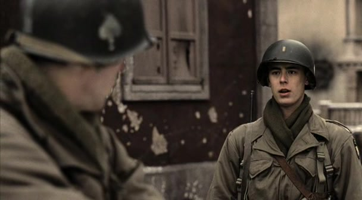
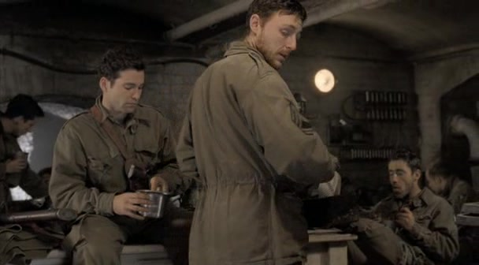
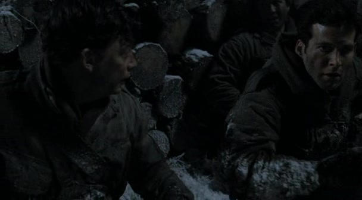
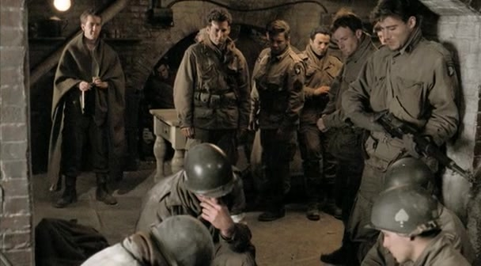
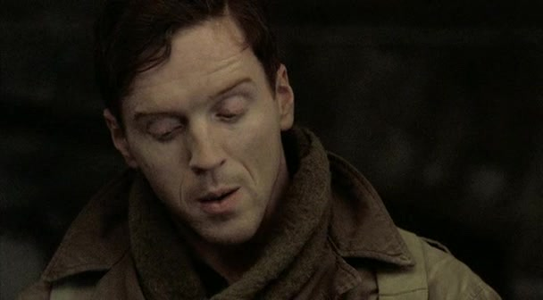
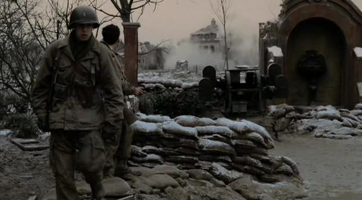

01
阿格诺／韦伯斯特返队熟悉的名字，陌生的连队
本集阿格诺建立场景；作为返队段落的环境配图，不是韦伯斯特受冷遇的近景。
剧情事实在荷兰负伤后，韦伯斯特经过住院、康复和补充兵营才返回。他错过了巴斯托涅，发现昔日战友已有多人缺席，自己也遭到冷淡对待。[2]
这一场为什么重要 · 个人解读
观众与韦伯斯特一起重新清点这支连队，但老兵没有义务替他重新讲述自己的痛苦。对他们而言，服役资格仍在，情感上的共同时间却断了一截。本集先让人感到隔阂，再让人理解隔阂背后的创伤，避免把返队简单写成受欢迎的团圆。

最后的巡逻 · 1945 年 2 月｜法国阿尔萨斯，阿格诺
韦伯斯特从医院返回，以为自己回到了熟悉的连队，却发现巴斯托涅已把留下的人变成他不认识的样子。与此同时，刚从西点军校毕业的琼斯急于得到战斗经验，老兵却只想少承担一次风险。阿格诺有屋顶、热水和新制服，河对岸仍然是战争。本篇只涉及第八集与必要的前集背景：从两个努力融入的人，读到一次有俘虏、有伤亡的任务，再读温特斯怎样重新定义责任。这里分析的是电视剧的安排；巡逻名单、人物对白和报告细节，不直接当作独立历史证据。[2]
本页范围回顾本集与必要的前集背景；以下主题分析针对剧集呈现，历史补充另作说明。
8 个关键场景，连起本集的因果与变化。
按剧中叙事顺序排列。批注默认展开，可直接阅读场景的意义。
剧情事实在荷兰负伤后，韦伯斯特经过住院、康复和补充兵营才返回。他错过了巴斯托涅，发现昔日战友已有多人缺席，自己也遭到冷淡对待。[2]
观众与韦伯斯特一起重新清点这支连队，但老兵没有义务替他重新讲述自己的痛苦。对他们而言，服役资格仍在，情感上的共同时间却断了一截。本集先让人感到隔阂，再让人理解隔阂背后的创伤，避免把返队简单写成受欢迎的团圆。

琼斯站在连部右侧，随后被安排到二排；真实本集画面。剧情事实琼斯从西点毕业后加入 E 连，主动申请巡逻却因缺乏经验被拒。他到二排找马拉其了解情况，一边履行军官职责，一边面对老兵的疑虑。[1]
琼斯的紧张在于：他有正式位置，却没有能证明自己的共同经历。老兵衡量军官的尺度，是这个人能不能带他们回来。温特斯拒绝让热情直接兑换指挥权，实际上同时保护了琼斯和将要听从他的人；培养军官也必须有边界。

阿格诺街头的救护 · 本集配图，展示镇内仍存在的危险剧情事实士兵终于能洗澡、领取干净制服。可就在镇内，拎着土豆的 Kiehn 被炮火杀死；与此同时，抓俘虏的巡逻名单仍在逐步确定。[4]
热水、新衣服和土豆让生存有了非常具体的形状：人们开始恢复日常，才更清楚日常可能随时被夺走。阿格诺并不安全，它只比此前的森林更像生活。于是同一道命令的重量发生变化——士兵已经能够想象不用再去的另一种夜晚。

琼斯再次向温特斯提出请求；他这次强调马拉其需要休息。剧情事实韦伯斯特建议琼斯争取替马拉其参加巡逻。琼斯向温特斯说明马拉其的疲劳，最终获准以观察员身份随队；指挥交给有经验的马丁。[1]
琼斯起初强调的是自己需要什么，后来终于说出别人需要什么。这个变化使他的愿望成为一个可以讨论的安排。韦伯斯特也通过照顾眼前的人重新找到位置；在这里，融入无需夸耀过去，而可以从帮一个疲惫的战友减少负担开始。

马丁与士兵在巡逻前的室内群像；代表准备阶段，不是温特斯讲解地图的画面。剧情事实温特斯交代渡河、抓俘虏和撤退的安排，由马丁带队，琼斯观察。韦伯斯特指出队伍有两名译员，斯皮尔斯让利布戈特留下，他自己随队。[3]
这次行动的目标对战斗冲动提出了限制：必须辨认、控制并带走活人。韦伯斯特指出冗余后，获得休息的是利布戈特，而不是自己。前面那种爱逃避的评价因此被画面修正；理解一个人物，要看他的建议最后让谁承担风险。

琼斯与队员在夜间掩体附近；真实本集巡逻画面，不是翻船或受伤瞬间。剧情事实渡河时一艘小艇翻覆，任务仍继续。马丁指挥包围与撤退，队伍抓到德国俘虏；杰克逊冲向哨所时，被自己投出的手榴弹碎片击中。[4]
本集用低光、近距离和急促口令缩窄观众视野，让人只能跟着下一项行动走。琼斯没有靠抢夺指挥来证明价值；服从有经验的人，同样是一种判断。突袭达成目标与突袭造成伤亡在同一夜发生，观众很难只用一种情绪为它命名。

杰克逊被带回连部，战友聚在身旁 · 第 8 集画面剧情事实杰克逊被抬回后，战友和军医试图救治，他仍伤重死亡。马丁汇报时，上级得知俘虏已到手；辛克随后要求同一支队伍再进行一次巡逻。[5]
旁白把死亡通知里的抽象措辞与地下室里的恐惧并置。对外是一项帮助赢得战争的任务，对身边的人却是他们无法救回的杰克逊。这不是否认战斗目标，而是拒绝让目标吞掉一个人的具体痛苦。第二道命令因此不能再按第一道命令的方式接受。

温特斯交代第二次巡逻的汇报口径；真实本集画面。剧情事实温特斯先说明第二次任务的安排，随后让队员整夜休息，次日汇报未抓到活俘虏。巡逻没有发生；本集末尾还有利普顿、琼斯与温特斯的晋升。[1]
他把拒绝冒险转化为自己承担的命令与报告责任，士兵因此不用各自违令。此举包含欺瞒上级的真实伦理代价，不能概括成随意抗命的榜样。但在本集给出的疲劳、已有情报和新增危险之间，他选择不让下属再次支付代价，领导力也因此从推进任务走向保护生命。
切换阶段，点人物或关系，阅读具体证据。
韦伯斯特想回到原有关系，琼斯想获得作战资格；老兵先看到两人缺少的经历。
用具体场景对照本集的两种处境。
抓到可审讯的俘虏、行动返回、情报到手；辛克希望重复这样的战果。
杰克逊没有活下来；同一批疲惫士兵还要去更深的敌方区域，再承担一次不可逆的损失。
任务目标已经达成，带回了俘虏。
↔一个熟悉的人在救治中死去。
已有成功经验，可以再抓更多人。
↔敌方会更加警觉，新目标更深入；不能照搬上一夜。
战果沿着指挥链传递，容易成为可复制的成果。
↔具体的人承受伤亡，活下来的人继续背负失去。
这是本页对剧情的对照解读，不是对真实辛克内心的裁定。俘虏确实有军事用途，第一次任务也并非毫无意义；本集质疑的是，既有战果是否足以自动证明下一次冒险值得。温特斯停止第二次任务，是对新增收益与新增风险作出判断。
短句原文、中文自译，以及它在这一刻的分量。
“We're too far along for that.”我们已经走到这一步了。
他不希望在战争的这一阶段，再让人承担可以避免的危险。此处的走到这一步指战争进程，而不是巡逻已经走得太远。
同一句话可以支持两种相反反应：再坚持一点，或不要白白失去已经坚持到这里的人。温特斯在本集选择让后者获得分量。[3]
英文短句核对来源列在篇末；中文为本页自译。配图的场景与出处随卡片标注。
只沿本集与此前的线索回看，不揭示后续情节。
剧情事实士兵获知有淋浴和新制服；韦伯斯特的旁白也把让马拉其休息与这些小小的舒适并列。[3]
个人解读这些物件不是无关紧要的日常装饰。冷、脏、疲惫持续太久后，恢复身体的舒适会重新唤起未来感。人一旦开始想象活着回家，对无谓风险就会更敏感。
剧情事实琼斯几次要求参加；马拉其等有经验的人已十分疲惫，最终由马丁负责指挥。[1]
个人解读本集不断对照谁想去与谁适合去，揭示热情、能力和承受余量是三件不同的事。安排任务不能只找最可靠的人，也必须问这个可靠的人还有多少力气。
剧情事实第一次巡逻被视为成功，辛克要求再来一次；第二次则通过虚假汇报代替实际行动。[5]
个人解读报告有能力把一夜的混乱压缩成少数结论，旁白却把被压缩的恐惧重新展开。结尾再次使用报告保护士兵，同时留下诚实与照顾之间的伦理裂缝。本集没有让这个裂缝凭空消失。

第二次巡逻没有发生。连队准备离开阿格诺，本集以晋升、告别和韦伯斯特对战争代价的追问结束。没有新战果的那一夜，反而让人第一次清楚感到：剩下的人可以不用继续交付一切。温特斯的决定保住的是未来的可能，杰克逊的死亡则提醒观众，这个可能从来不会自动到来。
回到档案首页 ↑